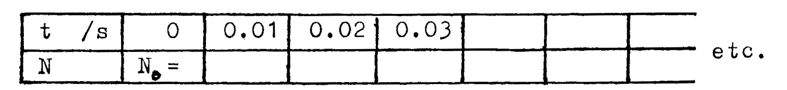
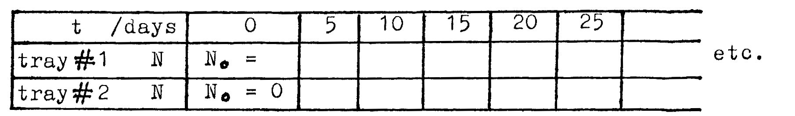

H3-1: Radioactive Decay¶
Apparatus¶
About 200 small cubes, marked \(\odot\) and \(\otimes\) on two faces; two trays; 2 x \(500\text{ml}\) beakers; periodic table of the elements; 2 sheets graph paper.
Introduction¶
In this model of radioactive decay, the cubes represent atoms. They are either parent (not decayed) atoms or daughter (decayed) atoms. When a cube is thrown at random, if a marked face of the cube faces up, then the atom has decayed.
Decay Model 1¶
(uses 1 tray and 1 beaker only)
Count the cubes. This is \(N_0\), the number of parent atoms of \({^{12}_{5}B}\) at time \(t=0\).
Place all the cubes in a beaker and empty the beaker into a tray. Shake the tray until all the cubes lie flat (do not touch any cubes).
Each time you empty a beaker into a tray, 0.01s has elapsed. Record the time \(t=0.01\)s. Discard cubes showing \(\odot\) or \(\otimes\) (these are atoms of \({^{A}_{Z}X}\) , the daughter atoms). Count and record \(N\), the number of cubes left in the tray.
Place the cubes now in the tray into the beaker. Empty the beaker into the tray and shake as before. Record \(t=0.02\)s. Discard decayed atoms. Record the new number \(N\) of cubes left in the tray.
Continue for \(t=0.03\), \(0.04\), \(0.05\), ... \(2.5\)s, or until \(N=0\).
Tabulate your readings as follows:

Analysis¶
- Plot a graph of \(N\) vs. \(t\). From the graph find the half life \(T_{\frac{1}{2}}\). The decay rate (lamda \(\lambda\)) is related to the half life as follows: \(\lambda = \ln{\frac{2}{T_{\frac{1}{2}}}}\)
- Using the formula: \(\frac{dN}{dt} = -\lambda N\), calculate the decay rate when \(t=0\). Find the graph’s gradient at time \(t=0\); is this the same (approximately) as the calculated value?
- On the same sheet of graph paper, plot another curve showing the number of daughter atoms.
- Find \(A\), \(Z\), and \(X\). Is this atom stable?
Decay Model 2¶
(uses 2 trays and 2 beakers)
In this experiment, tray #1 contains \({^{227}_{90}Th}\) atoms and tray #2 contains \({^{A1}_{Z1}X}\) daughter atoms. These daughter atoms decay again and are discarded.
Place all the cubes into tray #1, count them, and record number \(N_0\) at time \(t=0\). Record for tray #2 that \(N_0 = 0\) at \(t = 0\).
Place tray#1 cubes into beaker #1, return to tray #1 and shake tray to settle the cubes. Move cubes showing \(\otimes\) into tray #2. Record \(N\) for tray #1 and tray #2 at this time \(t=5\) days.
FIRST: Place cubes from tray #2 into beaker #2. Return to tray #2 and shake. Discard cubes showing \(\odot\).
SECOND: Place cubes from tray #1 into beaker #1. Return to tray #1 and shake. Move cubes showing \(\otimes\) to tray #2.
THEN: Count and record \(N\) for trays #1 and #2 at \(t=10\) days.
Continue repeating step 3, letting \(t = 15, 20, 25, ... \text{up to } 200\) days. (Each time you perform step 3, \(t\) advances by \(5\) days).
Tabulate your readings as follows:

Analysis¶
- On the same piece of graph paper plot \(N\) vs. \(t\) for trays #1 and #2 to obtain two curves.
- Using the #1 curve, find \(T_{\frac{1}{2}}\) for \({^{227}_{90}Th}\). Calculate \(\lambda\) and thus find \(N\) at \(t = 40\) days (use \(N = N_0 e^{- \lambda t}\)). Check that the value of \(N\) at \(t = 40\) days is about the same by using the graph, and note this value.
- Explain carefully why the curve #2 has the shape that it does.
- Use the reaction equations given above to determine \(A1\), \(Z1\), \(X\) and also \(A2\), \(Z2\), and \(Y\).
Questions¶
\({^{A2}_{Z2}Y }\) is unstable and decays. There follows a whole series of decays, ending with a stable atom, as follows:
\[\begin{split}{^{A2}_{Z2}Y} & \longrightarrow \text{?}+ \alpha & \quad T_{\frac{1}{2}}&= 3.92 \text{s}\\ \text{?} & \longrightarrow \text{?}+ \alpha & \quad T_{\frac{1}{2}} &= 1.8 \times 10^{-3} \text{s}\\ \text{?} & \longrightarrow \text{?}+ \beta^{-} & \quad T_{\frac{1}{2}}&= 36.1 \text{min}\\ \text{?} & \longrightarrow \text{?}+ \alpha & \quad T_{\frac{1}{2}}&= 2.15 \text{min}\\ \text{?} & \longrightarrow \text{?}+ \beta^{-} & \quad T_{\frac{1}{2}}&= 4.8 \text{min}\end{split}\]Write down the above set of reactions, deducing each of the ?s, giving atomic mass, atomic number, and symbol in each case.
A sample of \(\ {^{227}_{90}Th},\) when left for 30 days, is found to contain a lot of \({^{227}_{90}Th},\) \({^{A1}_{Z1}X},\) and the final stable isotope. There is very little of \({^{A2}_{Z2}Y}\) and the four intermediate isotopes. Why?
Draw a decay chain to map the complete series of seven decays from \({^{227}_{90}Th}\) to the stable isotope.